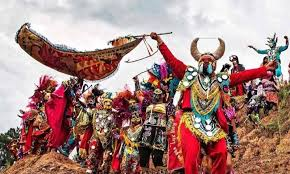
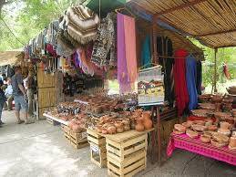
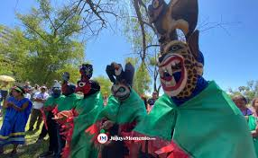

Historia y Tradiciones
Jujuy es una provincia argentina con una cultura rica en tradiciones andinas. Su historia está marcada por la influencia indígena y colonial.
Jujuy es una provincia argentina con una cultura rica en tradiciones andinas. Su historia está marcada por la influencia indígena y colonial.

El Carnaval de Humahuaca y la Fiesta de la Pachamama son celebraciones emblemáticas donde se combinan música, danza y rituales ancestrales.

Platos típicos como la humita, la llama a la parrilla y las empanadas jujeñas forman parte de la identidad culinaria de la región.

Jujuy es reconocida por su artesanía, especialmente en la Quebrada de Humahuaca, donde se destacan tejidos, cerámicas y tallados en madera. La música folclórica, con instrumentos como el erqueño y el charango, refleja la fusión de influencias indígenas y españolas.

Además del Carnaval de Humahuaca, se celebra el Arete Guazú, una festividad guaraní que honra la cosecha de maíz con danzas, música y rituales que fortalecen los lazos comunitarios.